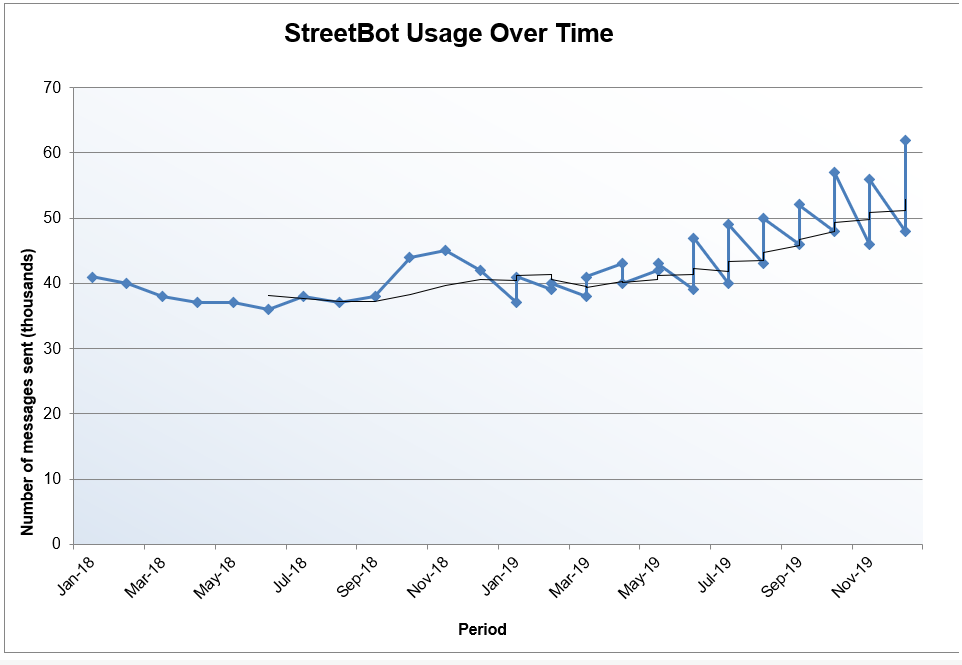

This page provides you with various insights and data about StreetLearn in general. This page was intended for developers to obtain feedback from StreetLearn itself to deduce if it is doing well. The data here can be used to improve StreetLearn and StreetBot in the future. Here you can see information such as StreetBot usage, conversations from StreetBot, time spent on tutorials and so on.
StreetBot Usage Over Time
This graph shows the number of messages sent to StreetBot over the past year. This activity helps keep track of activity of StreeBot, as a sudden dop in numbers could imply that it is not giving proper answers, or users giving up after a short amount of time.

Recommendations vs Manual Search
This graph shows the way users search for the best skills training for them, either by browsing manually through the "Classes" tab or through recommendations by StreetBot.